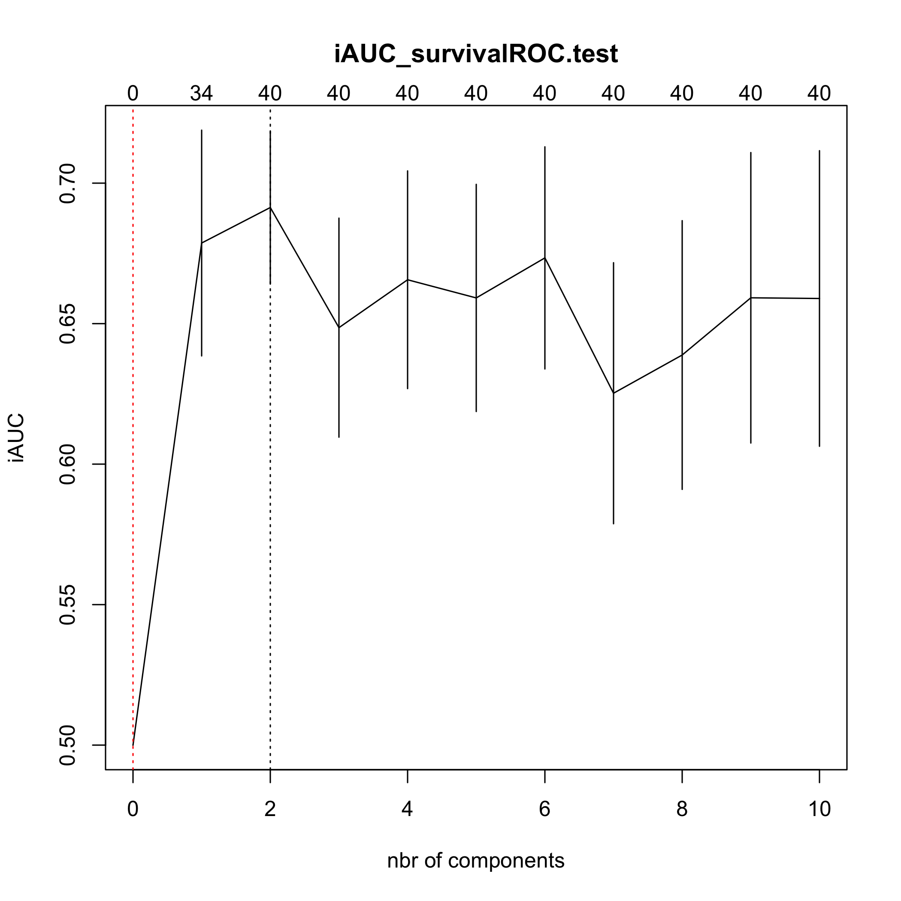

The goal of plsRcox is provide Cox models in a high dimensional setting in R.
plsRcox implements partial least squares Regression and various regular, sparse or kernel, techniques for fitting Cox models in high dimensional settings https://doi.org/10.1093/bioinformatics/btu660, Bastien, P., Bertrand, F., Meyer N., Maumy-Bertrand, M. (2015), Deviance residuals-based sparse PLS and sparse kernel PLS regression for censored data, Bioinformatics, 31(3):397-404. Cross validation criteria were studied in <arXiv:1810.02962>, Bertrand, F., Bastien, Ph. and Maumy-Bertrand, M. (2018), Cross validating extensions of kernel, sparse or regular partial least squares regression models to censored data.
The package was presented at the User2014! conference. Frédéric Bertrand, Jérémy Magnanensi, Nicolas Meyer and Myriam Bertrand (2014). “plsRglm, PLS generalized linear models for R”, book of abstracts, User2014!, Los Angeles, page 152, http://user2014.r-project.org/abstracts/posters/172_Bertrand.pdf.
The plsRcox package contains an original allelotyping dataset from “Allelotyping identification of genomic alterations in rectal chromosomally unstable tumors without preoperative treatment”, Benoît Romain, Agnès Neuville, Nicolas Meyer, Cécile Brigand, Serge Rohr, Anne Schneider, Marie-Pierre Gaub and Dominique Guenot (2010), BMC Cancer, 10:561, https://doi.org/10.1186/1471-2407-10-561.
Support for parallel computation and GPU is being developped.
The package provides several modelling techniques related to penalized Cox models or extensions of partial least squares to Cox models. The first two were new algorithms.
coxsplsDR and cv.coxsplsDR (Philippe Bastien, Frederic Bertrand, Nicolas Meyer, and Myriam Maumy-Bertrand (2015), “Deviance residuals-based sparse PLS and sparse kernel PLS regression for censored data”, Bioinformatics, 31(3):397-404, https://doi.org/10.1093/bioinformatics/btu660),
coxDKsplsDR and cv.coxDKsplsDR (Philippe Bastien, Frederic Bertrand, Nicolas Meyer, and Myriam Maumy-Bertrand (2015), “Deviance residuals-based sparse PLS and sparse kernel PLS regression for censored data”, Bioinformatics, 31(3):397-404, https://doi.org/10.1093/bioinformatics/btu660),
coxDKplsDR and cv.coxDKplsDR (Philippe Bastien (2008), “Deviance residuals based PLS regression for censored data in high dimensional setting”, Chemometrics and Intelligent Laboratory Systems, 91:78–86, https://doi.org/10.1016/j.chemolab.2007.09.009),
coxpls and cv.coxpls (Nguyen, D.V., Rocke, D.M. (2002), “Partial least squares proportional hazard regression for application to DNA microarray survival data”, Bioinformatics, 18(12):1625–1632),
coxplsDR and cv.coxplsDR (Philippe Bastien (2008), “Deviance residuals based PLS regression for censored data in high dimensional setting”, Chemometrics and Intelligent Laboratory Systems, 91:78–86, https://doi.org/10.1016/j.chemolab.2007.09.009),
DKplsRcox,
larsDR and cv.larsDR (Segal, M.R. (2006), “Microarray Gene Expression Data with Linked Survival Phenotypes: Diffuse large-B- Cell Lymphoma Revisited”, Biostatistics, 7:268-285, https://doi.org/10.1093/biostatistics/kxj006),
plsRcox and cv.plsRcox (Philippe Bastien, Vincenzo Esposito Vinzi, and Michel Tenenhaus (2005), “PLS generalised linear regression”, Computational Statistics & Data Analysis, 48(1):17–46, https://doi.org/10.1016/j.csda.2004.02.005),
autoplsRcox and cv.autoplsRcox (Philippe Bastien, Vincenzo Esposito Vinzi, and Michel Tenenhaus (2005), “PLS generalised linear regression”, Computational Statistics & Data Analysis, 48(1):17–46, https://doi.org/10.1016/j.csda.2004.02.005),
Installation
You can install the released version of plsRcox from CRAN with:
install.packages("plsRcox")You can install the development version of plsRcox from github with:
devtools::install_github("fbertran/plsRcox")Example
The original allelotyping dataset
library(plsRcox)
data(micro.censure)
Y_train_micro <- micro.censure$survyear[1:80]
C_train_micro <- micro.censure$DC[1:80]
Y_test_micro <- micro.censure$survyear[81:117]
C_test_micro <- micro.censure$DC[81:117]
data(Xmicro.censure_compl_imp)
X_train_micro <- apply((as.matrix(Xmicro.censure_compl_imp)),FUN="as.numeric",MARGIN=2)[1:80,]
X_train_micro_df <- data.frame(X_train_micro)Compute deviance residuals with some options.
DR_coxph(Y_train_micro,C_train_micro,plot=TRUE)
#> 1 2 3 4 5 6
#> -1.48432960 -0.54695398 -0.23145502 -0.34003013 -0.97633722 -0.38667660
#> 7 8 9 10 11 12
#> -0.38667660 1.57418914 -0.54695398 -0.15811388 2.10405254 -0.23145502
#> 13 14 15 16 17 18
#> -0.38667660 -1.09692040 -0.15811388 -0.15811388 -0.54695398 -0.38667660
#> 19 20 21 22 23 24
#> 0.65978609 -1.09692040 -0.43627414 -0.28961087 -0.38667660 -0.97633722
#> 25 26 27 28 29 30
#> -1.09692040 -0.15811388 -0.43627414 -0.43627414 -0.38667660 -0.23145502
#> 31 32 33 34 35 36
#> 2.30072697 -0.49023986 -0.54695398 -0.73444882 1.31082939 -0.97633722
#> 37 38 39 40 41 42
#> 1.70134282 -0.54695398 -0.15811388 1.07714870 -0.15811388 -0.49023986
#> 43 44 45 46 47 48
#> -0.34003013 -0.97633722 -0.15811388 -0.91410465 -1.09692040 -0.43627414
#> 49 50 51 52 53 54
#> -0.38667660 -0.09836581 -0.79392956 0.46851068 -0.34003013 1.95366297
#> 55 56 57 58 59 60
#> 2.60558118 -0.54695398 -1.09692040 -0.15811388 -0.49023986 -0.97633722
#> 61 62 63 64 65 66
#> -0.28961087 1.44879795 1.82660327 -0.38667660 0.96936094 -0.15811388
#> 67 68 69 70 71 72
#> -0.43627414 -0.49023986 1.18850436 -0.97633722 -0.97633722 0.86322194
#> 73 74 75 76 77 78
#> -0.43627414 -0.49023986 -0.38667660 0.76231394 -0.97633722 -0.43627414
#> 79 80
#> -0.54695398 -0.43627414DR_coxph(Y_train_micro,C_train_micro,scaleY=FALSE,plot=TRUE)
#> 1 2 3 4 5 6
#> -1.48432960 -0.54695398 -0.23145502 -0.34003013 -0.97633722 -0.38667660
#> 7 8 9 10 11 12
#> -0.38667660 1.57418914 -0.54695398 -0.15811388 2.10405254 -0.23145502
#> 13 14 15 16 17 18
#> -0.38667660 -1.09692040 -0.15811388 -0.15811388 -0.54695398 -0.38667660
#> 19 20 21 22 23 24
#> 0.65978609 -1.09692040 -0.43627414 -0.28961087 -0.38667660 -0.97633722
#> 25 26 27 28 29 30
#> -1.09692040 -0.15811388 -0.43627414 -0.43627414 -0.38667660 -0.23145502
#> 31 32 33 34 35 36
#> 2.30072697 -0.49023986 -0.54695398 -0.73444882 1.31082939 -0.97633722
#> 37 38 39 40 41 42
#> 1.70134282 -0.54695398 -0.15811388 1.07714870 -0.15811388 -0.49023986
#> 43 44 45 46 47 48
#> -0.34003013 -0.97633722 -0.15811388 -0.91410465 -1.09692040 -0.43627414
#> 49 50 51 52 53 54
#> -0.38667660 -0.09836581 -0.79392956 0.46851068 -0.34003013 1.95366297
#> 55 56 57 58 59 60
#> 2.60558118 -0.54695398 -1.09692040 -0.15811388 -0.49023986 -0.97633722
#> 61 62 63 64 65 66
#> -0.28961087 1.44879795 1.82660327 -0.38667660 0.96936094 -0.15811388
#> 67 68 69 70 71 72
#> -0.43627414 -0.49023986 1.18850436 -0.97633722 -0.97633722 0.86322194
#> 73 74 75 76 77 78
#> -0.43627414 -0.49023986 -0.38667660 0.76231394 -0.97633722 -0.43627414
#> 79 80
#> -0.54695398 -0.43627414DR_coxph(Y_train_micro,C_train_micro,scaleY=TRUE,plot=TRUE)
#> 1 2 3 4 5 6
#> -1.48432960 -0.54695398 -0.23145502 -0.34003013 -0.97633722 -0.38667660
#> 7 8 9 10 11 12
#> -0.38667660 1.57418914 -0.54695398 -0.15811388 2.10405254 -0.23145502
#> 13 14 15 16 17 18
#> -0.38667660 -1.09692040 -0.15811388 -0.15811388 -0.54695398 -0.38667660
#> 19 20 21 22 23 24
#> 0.65978609 -1.09692040 -0.43627414 -0.28961087 -0.38667660 -0.97633722
#> 25 26 27 28 29 30
#> -1.09692040 -0.15811388 -0.43627414 -0.43627414 -0.38667660 -0.23145502
#> 31 32 33 34 35 36
#> 2.30072697 -0.49023986 -0.54695398 -0.73444882 1.31082939 -0.97633722
#> 37 38 39 40 41 42
#> 1.70134282 -0.54695398 -0.15811388 1.07714870 -0.15811388 -0.49023986
#> 43 44 45 46 47 48
#> -0.34003013 -0.97633722 -0.15811388 -0.91410465 -1.09692040 -0.43627414
#> 49 50 51 52 53 54
#> -0.38667660 -0.09836581 -0.79392956 0.46851068 -0.34003013 1.95366297
#> 55 56 57 58 59 60
#> 2.60558118 -0.54695398 -1.09692040 -0.15811388 -0.49023986 -0.97633722
#> 61 62 63 64 65 66
#> -0.28961087 1.44879795 1.82660327 -0.38667660 0.96936094 -0.15811388
#> 67 68 69 70 71 72
#> -0.43627414 -0.49023986 1.18850436 -0.97633722 -0.97633722 0.86322194
#> 73 74 75 76 77 78
#> -0.43627414 -0.49023986 -0.38667660 0.76231394 -0.97633722 -0.43627414
#> 79 80
#> -0.54695398 -0.43627414coxsplsDR
(cox_splsDR_fit=coxsplsDR(X_train_micro,Y_train_micro,C_train_micro,ncomp=6,eta=.5))
#> Call:
#> coxph(formula = YCsurv ~ ., data = tt_splsDR)
#>
#> coef exp(coef) se(coef) z p
#> dim.1 0.8093 2.2462 0.2029 3.989 6.63e-05
#> dim.2 0.9295 2.5333 0.2939 3.163 0.00156
#> dim.3 0.9968 2.7096 0.4190 2.379 0.01736
#> dim.4 0.9705 2.6391 0.3793 2.558 0.01052
#> dim.5 0.2162 1.2413 0.2811 0.769 0.44192
#> dim.6 0.4380 1.5496 0.3608 1.214 0.22473
#>
#> Likelihood ratio test=55.06 on 6 df, p=4.51e-10
#> n= 80, number of events= 17
(cox_splsDR_fit2=coxsplsDR(~X_train_micro,Y_train_micro,C_train_micro,ncomp=6,eta=.5,trace=TRUE))
#> The variables that join the set of selected variables at each step:
#> - 1th step (K=1):
#> X_train_microD20S107 X_train_microD5S346 X_train_microD1S225 X_train_microD3S1282 X_train_microD15S127 X_train_microD1S207 X_train_microD2S138 X_train_microD10S191 X_train_microD14S65 X_train_microD4S414
#> X_train_microD16S408 X_train_microT X_train_microN X_train_microSTADE
#> - 2th step (K=2):
#> X_train_microD22S928 X_train_microD16S422 X_train_microD3S1283 X_train_microAgediag X_train_microM
#> - 3th step (K=3):
#> X_train_microD1S305 X_train_microD8S283 X_train_microD10S192 X_train_microsexe X_train_microSiege
#> - 4th step (K=4):
#> X_train_microD17S794 X_train_microD13S173 X_train_microTP53 X_train_microD6S264 X_train_microD2S159 X_train_microD6S275
#> - 5th step (K=5):
#> X_train_microD18S61 X_train_microD9S171 X_train_microD8S264 X_train_microD18S53 X_train_microD4S394 X_train_microD11S916
#> - 6th step (K=6):
#> X_train_microD17S790
#> Call:
#> coxph(formula = YCsurv ~ ., data = tt_splsDR)
#>
#> coef exp(coef) se(coef) z p
#> dim.1 0.8093 2.2462 0.2029 3.989 6.63e-05
#> dim.2 0.9295 2.5333 0.2939 3.163 0.00156
#> dim.3 0.9968 2.7096 0.4190 2.379 0.01736
#> dim.4 0.9705 2.6391 0.3793 2.558 0.01052
#> dim.5 0.2162 1.2413 0.2811 0.769 0.44192
#> dim.6 0.4380 1.5496 0.3608 1.214 0.22473
#>
#> Likelihood ratio test=55.06 on 6 df, p=4.51e-10
#> n= 80, number of events= 17
(cox_splsDR_fit3=coxsplsDR(~.,Y_train_micro,C_train_micro,ncomp=6,
dataXplan=X_train_micro_df,eta=.5))
#> Call:
#> coxph(formula = YCsurv ~ ., data = tt_splsDR)
#>
#> coef exp(coef) se(coef) z p
#> dim.1 0.8093 2.2462 0.2029 3.989 6.63e-05
#> dim.2 0.9295 2.5333 0.2939 3.163 0.00156
#> dim.3 0.9968 2.7096 0.4190 2.379 0.01736
#> dim.4 0.9705 2.6391 0.3793 2.558 0.01052
#> dim.5 0.2162 1.2413 0.2811 0.769 0.44192
#> dim.6 0.4380 1.5496 0.3608 1.214 0.22473
#>
#> Likelihood ratio test=55.06 on 6 df, p=4.51e-10
#> n= 80, number of events= 17
rm(cox_splsDR_fit,cox_splsDR_fit2,cox_splsDR_fit3)cv.coxsplsDR
set.seed(123456)
(cv.coxsplsDR.res=cv.coxsplsDR(list(x=X_train_micro,time=Y_train_micro, status=C_train_micro),nt=10,eta=.1))
#> CV Fold 1
#> CV Fold 2
#> CV Fold 3
#> CV Fold 4
#> CV Fold 5
#> $nt
#> [1] 10
#>
#> $cv.error10
#> [1] 0.5000000 0.6773894 0.6493620 0.6641847 0.6240118 0.6442501 0.6368322
#> [8] 0.6286337 0.6116994 0.6125641 0.6488137
#>
#> $cv.se10
#> [1] 0.00000000 0.02579921 0.04338024 0.03888348 0.04730986 0.04581284
#> [7] 0.05021484 0.04737293 0.05050230 0.04570564 0.04490152
#>
#> $folds
#> $folds$`1`
#> [1] 64 15 56 59 10 39 70 4 80 16 37 33 50 51 78 44
#>
#> $folds$`2`
#> [1] 60 40 41 57 5 61 43 42 29 20 32 68 1 36 55 17
#>
#> $folds$`3`
#> [1] 31 8 62 13 73 47 71 46 35 69 75 26 74 65 58 63
#>
#> $folds$`4`
#> [1] 27 72 79 21 67 45 6 30 11 22 24 53 23 2 49 7
#>
#> $folds$`5`
#> [1] 28 12 66 48 77 9 38 25 19 54 34 52 3 14 76 18
#>
#>
#> $lambda.min10
#> [1] 1
#>
#> $lambda.1se10
#> [1] 0
#>
#> $nzb
#> [1] 0 32 37 40 40 40 40 40 40 40 40coxDKsplsDR
(cox_DKsplsDR_fit=coxDKsplsDR(X_train_micro,Y_train_micro,C_train_micro,ncomp=6, validation="CV",eta=.5))
#> Kernel : rbfdot
#> Estimated_sigma 0.01224473
#> Call:
#> coxph(formula = YCsurv ~ ., data = tt_DKsplsDR)
#>
#> coef exp(coef) se(coef) z p
#> dim.1 3.637e+00 3.797e+01 1.246e+00 2.919 0.00351
#> dim.2 9.920e+00 2.033e+04 3.303e+00 3.003 0.00267
#> dim.3 6.502e+00 6.668e+02 2.579e+00 2.521 0.01170
#> dim.4 1.467e+01 2.342e+06 4.854e+00 3.021 0.00252
#> dim.5 6.109e+00 4.497e+02 2.759e+00 2.214 0.02682
#> dim.6 1.249e+01 2.666e+05 4.980e+00 2.509 0.01212
#>
#> Likelihood ratio test=69.58 on 6 df, p=4.977e-13
#> n= 80, number of events= 17
(cox_DKsplsDR_fit=coxDKsplsDR(~X_train_micro,Y_train_micro,C_train_micro,ncomp=6, validation="CV",eta=.5))
#> Kernel : rbfdot
#> Estimated_sigma 0.01198748
#> Call:
#> coxph(formula = YCsurv ~ ., data = tt_DKsplsDR)
#>
#> coef exp(coef) se(coef) z p
#> dim.1 2.649e+00 1.414e+01 1.206e+00 2.197 0.028012
#> dim.2 1.004e+01 2.304e+04 2.861e+00 3.511 0.000447
#> dim.3 6.887e+00 9.791e+02 2.476e+00 2.782 0.005404
#> dim.4 1.166e+01 1.160e+05 3.821e+00 3.052 0.002274
#> dim.5 8.334e+00 4.164e+03 4.227e+00 1.971 0.048674
#> dim.6 5.721e+00 3.051e+02 2.425e+00 2.359 0.018313
#>
#> Likelihood ratio test=64.42 on 6 df, p=5.67e-12
#> n= 80, number of events= 17
(cox_DKsplsDR_fit=coxDKsplsDR(~.,Y_train_micro,C_train_micro,ncomp=6,
validation="CV",dataXplan=data.frame(X_train_micro),eta=.5))
#> Kernel : rbfdot
#> Estimated_sigma 0.0131134
#> Call:
#> coxph(formula = YCsurv ~ ., data = tt_DKsplsDR)
#>
#> coef exp(coef) se(coef) z p
#> dim.1 4.409e+00 8.218e+01 1.449e+00 3.043 0.00234
#> dim.2 9.764e+00 1.739e+04 3.227e+00 3.025 0.00248
#> dim.3 6.298e+00 5.434e+02 2.382e+00 2.644 0.00819
#> dim.4 1.491e+01 2.994e+06 4.781e+00 3.119 0.00182
#> dim.5 4.592e+00 9.865e+01 2.267e+00 2.025 0.04284
#> dim.6 6.985e+00 1.080e+03 3.048e+00 2.291 0.02194
#>
#> Likelihood ratio test=69.14 on 6 df, p=6.149e-13
#> n= 80, number of events= 17
rm(cox_DKsplsDR_fit)cv.coxsplsDR
set.seed(123456)
(cv.coxDKsplsDR.res=cv.coxDKsplsDR(list(x=X_train_micro,time=Y_train_micro, status=C_train_micro),nt=10,eta=.1))
#> Kernel : rbfdot
#> Estimated_sigma 0.01186138
#> CV Fold 1
#> Kernel : rbfdot
#> Estimated_sigma 0.0123956
#> CV Fold 2
#> Kernel : rbfdot
#> Estimated_sigma 0.01263568
#> CV Fold 3
#> Kernel : rbfdot
#> Estimated_sigma 0.01235948
#> CV Fold 4
#> Kernel : rbfdot
#> Estimated_sigma 0.01247944
#> CV Fold 5#> $nt
#> [1] 10
#>
#> $cv.error10
#> [1] 0.5000000 0.6452065 0.6390089 0.6596989 0.7176982 0.6872992 0.6713925
#> [8] 0.6911991 0.5932097 0.6453234 0.6199085
#>
#> $cv.se10
#> [1] 0.00000000 0.01653815 0.04090982 0.03568890 0.04264094 0.04067596
#> [7] 0.04617710 0.03699745 0.03283319 0.03716281 0.03878102
#>
#> $folds
#> $folds$`1`
#> [1] 64 15 56 59 10 39 70 4 80 16 37 33 50 51 78 44
#>
#> $folds$`2`
#> [1] 60 40 41 57 5 61 43 42 29 20 32 68 1 36 55 17
#>
#> $folds$`3`
#> [1] 31 8 62 13 73 47 71 46 35 69 75 26 74 65 58 63
#>
#> $folds$`4`
#> [1] 27 72 79 21 67 45 6 30 11 22 24 53 23 2 49 7
#>
#> $folds$`5`
#> [1] 28 12 66 48 77 9 38 25 19 54 34 52 3 14 76 18
#>
#>
#> $lambda.min10
#> [1] 4
#>
#> $lambda.1se10
#> [1] 0
#>
#> $nzb
#> [1] 0 53 62 64 64 64 64 64 64 64 64plsRcox
plsRcox(X_train_micro,time=Y_train_micro,event=C_train_micro,nt=5)
#> ____************************************************____
#> ____Component____ 1 ____
#> ____Component____ 2 ____
#> ____Component____ 3 ____
#> ____Component____ 4 ____
#> ____Component____ 5 ____
#> ____Predicting X without NA neither in X nor in Y____
#> ****________________________________________________****
#> Number of required components:
#> [1] 5
#> Number of successfully computed components:
#> [1] 5
#> Coefficients:
#> [,1]
#> D18S61 0.68964919
#> D17S794 -1.14362392
#> D13S173 1.37632457
#> D20S107 4.96128745
#> TP53 1.68453950
#> D9S171 -1.46691252
#> D8S264 0.66710776
#> D5S346 -4.61338196
#> D22S928 -1.82005524
#> D18S53 0.79853646
#> D1S225 -1.46234986
#> D3S1282 -1.67925042
#> D15S127 3.92225537
#> D1S305 -2.29680161
#> D1S207 2.02539691
#> D2S138 -3.48975878
#> D16S422 -2.92189625
#> D9S179 -0.59484679
#> D10S191 -1.30136747
#> D4S394 1.34265359
#> D1S197 -0.75014044
#> D6S264 1.32746604
#> D14S65 -3.20882866
#> D17S790 0.55427680
#> D5S430 3.40654627
#> D3S1283 2.12510239
#> D4S414 2.73619967
#> D8S283 0.71955323
#> D11S916 1.45026508
#> D2S159 0.90293134
#> D16S408 -0.59719901
#> D6S275 -1.02204186
#> D10S192 1.14220367
#> sexe 0.67314561
#> Agediag 0.04908478
#> Siege -0.41985924
#> T 2.70581463
#> N 2.47039973
#> M -4.53213922
#> STADE 0.48221697
#> Information criteria and Fit statistics:
#> AIC BIC
#> Nb_Comp_0 112.87990 112.87990
#> Nb_Comp_1 85.11075 87.49278
#> Nb_Comp_2 75.49537 80.25942
#> Nb_Comp_3 68.45852 75.60460
#> Nb_Comp_4 63.09284 72.62094
#> Nb_Comp_5 55.30567 67.21581
plsRcox(~X_train_micro,time=Y_train_micro,event=C_train_micro,nt=5)
#> ____************************************************____
#> ____Component____ 1 ____
#> ____Component____ 2 ____
#> ____Component____ 3 ____
#> ____Component____ 4 ____
#> ____Component____ 5 ____
#> ____Predicting X without NA neither in X nor in Y____
#> ****________________________________________________****
#> Number of required components:
#> [1] 5
#> Number of successfully computed components:
#> [1] 5
#> Coefficients:
#> [,1]
#> X_train_microD18S61 0.68964919
#> X_train_microD17S794 -1.14362392
#> X_train_microD13S173 1.37632457
#> X_train_microD20S107 4.96128745
#> X_train_microTP53 1.68453950
#> X_train_microD9S171 -1.46691252
#> X_train_microD8S264 0.66710776
#> X_train_microD5S346 -4.61338196
#> X_train_microD22S928 -1.82005524
#> X_train_microD18S53 0.79853646
#> X_train_microD1S225 -1.46234986
#> X_train_microD3S1282 -1.67925042
#> X_train_microD15S127 3.92225537
#> X_train_microD1S305 -2.29680161
#> X_train_microD1S207 2.02539691
#> X_train_microD2S138 -3.48975878
#> X_train_microD16S422 -2.92189625
#> X_train_microD9S179 -0.59484679
#> X_train_microD10S191 -1.30136747
#> X_train_microD4S394 1.34265359
#> X_train_microD1S197 -0.75014044
#> X_train_microD6S264 1.32746604
#> X_train_microD14S65 -3.20882866
#> X_train_microD17S790 0.55427680
#> X_train_microD5S430 3.40654627
#> X_train_microD3S1283 2.12510239
#> X_train_microD4S414 2.73619967
#> X_train_microD8S283 0.71955323
#> X_train_microD11S916 1.45026508
#> X_train_microD2S159 0.90293134
#> X_train_microD16S408 -0.59719901
#> X_train_microD6S275 -1.02204186
#> X_train_microD10S192 1.14220367
#> X_train_microsexe 0.67314561
#> X_train_microAgediag 0.04908478
#> X_train_microSiege -0.41985924
#> X_train_microT 2.70581463
#> X_train_microN 2.47039973
#> X_train_microM -4.53213922
#> X_train_microSTADE 0.48221697
#> Information criteria and Fit statistics:
#> AIC BIC
#> Nb_Comp_0 112.87990 112.87990
#> Nb_Comp_1 85.11075 87.49278
#> Nb_Comp_2 75.49537 80.25942
#> Nb_Comp_3 68.45852 75.60460
#> Nb_Comp_4 63.09284 72.62094
#> Nb_Comp_5 55.30567 67.21581
plsRcox(Xplan=X_train_micro,time=Y_train_micro,event=C_train_micro,nt=5,sparse=TRUE, alpha.pvals.expli=.15)
#> ____************************************************____
#> ____Component____ 1 ____
#> ____Component____ 2 ____
#> ____Component____ 3 ____
#> Warning : 25 < 10^{-12}
#> Warning only 3 components could thus be extracted
#> ____Predicting X without NA neither in X nor in Y____
#> ****________________________________________________****
#> Number of required components:
#> [1] 5
#> Number of successfully computed components:
#> [1] 3
#> Coefficients:
#> [,1]
#> D18S61 0.00000000
#> D17S794 0.00000000
#> D13S173 0.00000000
#> D20S107 2.22871454
#> TP53 0.00000000
#> D9S171 0.00000000
#> D8S264 0.00000000
#> D5S346 -1.20298526
#> D22S928 0.00000000
#> D18S53 0.00000000
#> D1S225 -1.29459798
#> D3S1282 -1.99426291
#> D15S127 1.39645601
#> D1S305 0.00000000
#> D1S207 1.25164327
#> D2S138 -1.65740160
#> D16S422 0.00000000
#> D9S179 0.00000000
#> D10S191 -1.25360805
#> D4S394 0.00000000
#> D1S197 0.00000000
#> D6S264 0.00000000
#> D14S65 -1.33587373
#> D17S790 0.00000000
#> D5S430 1.72799213
#> D3S1283 0.00000000
#> D4S414 1.03558702
#> D8S283 0.00000000
#> D11S916 0.00000000
#> D2S159 0.00000000
#> D16S408 -1.75748257
#> D6S275 0.00000000
#> D10S192 0.00000000
#> sexe 0.00000000
#> Agediag 0.05075304
#> Siege 0.00000000
#> T 1.36569407
#> N 1.27485618
#> M -1.17682617
#> STADE -0.65106093
#> Information criteria and Fit statistics:
#> AIC BIC
#> Nb_Comp_0 112.87990 112.87990
#> Nb_Comp_1 85.54313 87.92516
#> Nb_Comp_2 75.16125 79.92530
#> Nb_Comp_3 73.63097 80.77705
plsRcox(Xplan=~X_train_micro,time=Y_train_micro,event=C_train_micro,nt=5,sparse=TRUE, alpha.pvals.expli=.15)
#> ____************************************************____
#> ____Component____ 1 ____
#> ____Component____ 2 ____
#> ____Component____ 3 ____
#> Warning : 25 < 10^{-12}
#> Warning only 3 components could thus be extracted
#> ____Predicting X without NA neither in X nor in Y____
#> ****________________________________________________****
#> Number of required components:
#> [1] 5
#> Number of successfully computed components:
#> [1] 3
#> Coefficients:
#> [,1]
#> X_train_microD18S61 0.00000000
#> X_train_microD17S794 0.00000000
#> X_train_microD13S173 0.00000000
#> X_train_microD20S107 2.22871454
#> X_train_microTP53 0.00000000
#> X_train_microD9S171 0.00000000
#> X_train_microD8S264 0.00000000
#> X_train_microD5S346 -1.20298526
#> X_train_microD22S928 0.00000000
#> X_train_microD18S53 0.00000000
#> X_train_microD1S225 -1.29459798
#> X_train_microD3S1282 -1.99426291
#> X_train_microD15S127 1.39645601
#> X_train_microD1S305 0.00000000
#> X_train_microD1S207 1.25164327
#> X_train_microD2S138 -1.65740160
#> X_train_microD16S422 0.00000000
#> X_train_microD9S179 0.00000000
#> X_train_microD10S191 -1.25360805
#> X_train_microD4S394 0.00000000
#> X_train_microD1S197 0.00000000
#> X_train_microD6S264 0.00000000
#> X_train_microD14S65 -1.33587373
#> X_train_microD17S790 0.00000000
#> X_train_microD5S430 1.72799213
#> X_train_microD3S1283 0.00000000
#> X_train_microD4S414 1.03558702
#> X_train_microD8S283 0.00000000
#> X_train_microD11S916 0.00000000
#> X_train_microD2S159 0.00000000
#> X_train_microD16S408 -1.75748257
#> X_train_microD6S275 0.00000000
#> X_train_microD10S192 0.00000000
#> X_train_microsexe 0.00000000
#> X_train_microAgediag 0.05075304
#> X_train_microSiege 0.00000000
#> X_train_microT 1.36569407
#> X_train_microN 1.27485618
#> X_train_microM -1.17682617
#> X_train_microSTADE -0.65106093
#> Information criteria and Fit statistics:
#> AIC BIC
#> Nb_Comp_0 112.87990 112.87990
#> Nb_Comp_1 85.54313 87.92516
#> Nb_Comp_2 75.16125 79.92530
#> Nb_Comp_3 73.63097 80.77705cv.plsRcox
set.seed(123456)
(cv.plsRcox.res=cv.plsRcox(list(x=X_train_micro,time=Y_train_micro,status=C_train_micro),nt=10,verbose = FALSE))
#> $nt
#> [1] 10
#>
#> $cv.error5
#> [1] 0.5000000 0.9680950 0.9682845 0.9678603 0.9577447 0.9674094 0.9685457
#> [8] 0.9671530 0.9654175 0.9600213 0.9648240
#>
#> $cv.se5
#> [1] 5.551115e-18 3.934293e-04 6.577693e-04 2.996472e-03 1.929769e-03
#> [6] 1.046829e-03 1.425160e-03 9.134268e-04 3.557709e-03 2.614560e-03
#> [11] 5.990163e-04
#>
#> $folds
#> $folds$`1`
#> [1] 64 15 56 59 10 39 70 4 80 16 37 33 50 51 78 44
#>
#> $folds$`2`
#> [1] 60 40 41 57 5 61 43 42 29 20 32 68 1 36 55 17
#>
#> $folds$`3`
#> [1] 31 8 62 13 73 47 71 46 35 69 75 26 74 65 58 63
#>
#> $folds$`4`
#> [1] 27 72 79 21 67 45 6 30 11 22 24 53 23 2 49 7
#>
#> $folds$`5`
#> [1] 28 12 66 48 77 9 38 25 19 54 34 52 3 14 76 18
#>
#>
#> $lambda.min5
#> [1] 6
#>
#> $lambda.1se5
#> [1] 0DKplsRcox
DKplsRcox(X_train_micro,time=Y_train_micro,event=C_train_micro,nt=5)
#> Kernel : rbfdot
#> Estimated_sigma 0.01224473
#> ____************************************************____
#> ____Component____ 1 ____
#> ____Component____ 2 ____
#> ____Component____ 3 ____
#> ____Component____ 4 ____
#> ____Component____ 5 ____
#> ____Predicting X without NA neither in X nor in Y____
#> ****________________________________________________****
#> Call:
#> coxph(formula = YCsurv ~ ., data = tt_DKplsRcox)
#>
#> coef exp(coef) se(coef) z p
#> Comp_1 -8.697e+00 1.670e-04 3.130e+00 -2.779 0.005450
#> Comp_2 2.689e+01 4.753e+11 7.117e+00 3.778 0.000158
#> Comp_3 2.097e+01 1.283e+09 5.799e+00 3.617 0.000299
#> Comp_4 9.230e+00 1.020e+04 3.050e+00 3.026 0.002475
#> Comp_5 8.445e+00 4.653e+03 2.626e+00 3.216 0.001302
#>
#> Likelihood ratio test=69.98 on 5 df, p=1.033e-13
#> n= 80, number of events= 17
DKplsRcox(~X_train_micro,time=Y_train_micro,event=C_train_micro,nt=5)
#> Kernel : rbfdot
#> Estimated_sigma 0.01198748
#> ____************************************************____
#> ____Component____ 1 ____
#> ____Component____ 2 ____
#> ____Component____ 3 ____
#> ____Component____ 4 ____
#> ____Component____ 5 ____
#> ____Predicting X without NA neither in X nor in Y____
#> ****________________________________________________****
#> Call:
#> coxph(formula = YCsurv ~ ., data = tt_DKplsRcox)
#>
#> coef exp(coef) se(coef) z p
#> Comp_1 -9.302e+00 9.124e-05 3.258e+00 -2.855 0.004307
#> Comp_2 2.708e+01 5.780e+11 7.138e+00 3.794 0.000148
#> Comp_3 2.083e+01 1.108e+09 5.742e+00 3.627 0.000287
#> Comp_4 8.959e+00 7.774e+03 2.982e+00 3.004 0.002663
#> Comp_5 8.369e+00 4.311e+03 2.610e+00 3.207 0.001343
#>
#> Likelihood ratio test=69.46 on 5 df, p=1.328e-13
#> n= 80, number of events= 17
DKplsRcox(Xplan=X_train_micro,time=Y_train_micro,event=C_train_micro,nt=5,sparse=TRUE, alpha.pvals.expli=.15)
#> Kernel : rbfdot
#> Estimated_sigma 0.0131134
#> ____************************************************____
#> ____Component____ 1 ____
#> ____Component____ 2 ____
#> ____Component____ 3 ____
#> ____Component____ 4 ____
#> ____Component____ 5 ____
#> ____Predicting X without NA neither in X nor in Y____
#> ****________________________________________________****
#> Call:
#> coxph(formula = YCsurv ~ ., data = tt_DKplsRcox)
#>
#> coef exp(coef) se(coef) z p
#> Comp_1 -6.302e+01 4.283e-28 1.917e+01 -3.288 0.001009
#> Comp_2 9.190e+01 8.127e+39 2.721e+01 3.377 0.000732
#> Comp_3 4.391e+01 1.179e+19 1.319e+01 3.330 0.000867
#> Comp_4 4.459e+01 2.320e+19 1.415e+01 3.151 0.001629
#> Comp_5 9.395e+00 1.202e+04 3.430e+00 2.739 0.006166
#>
#> Likelihood ratio test=81.58 on 5 df, p=3.921e-16
#> n= 80, number of events= 17
DKplsRcox(Xplan=~X_train_micro,time=Y_train_micro,event=C_train_micro,nt=5,sparse=TRUE, alpha.pvals.expli=.15)
#> Kernel : rbfdot
#> Estimated_sigma 0.01252998
#> ____************************************************____
#> ____Component____ 1 ____
#> ____Component____ 2 ____
#> ____Component____ 3 ____
#> ____Component____ 4 ____
#> ____Component____ 5 ____
#> ____Predicting X without NA neither in X nor in Y____
#> ****________________________________________________****
#> Call:
#> coxph(formula = YCsurv ~ ., data = tt_DKplsRcox)
#>
#> coef exp(coef) se(coef) z p
#> Comp_1 -7.380e+01 8.860e-33 2.455e+01 -3.006 0.00264
#> Comp_2 1.108e+02 1.327e+48 3.640e+01 3.044 0.00233
#> Comp_3 4.924e+01 2.437e+21 1.627e+01 3.026 0.00248
#> Comp_4 5.359e+01 1.882e+23 1.800e+01 2.977 0.00291
#> Comp_5 1.116e+01 7.038e+04 4.011e+00 2.783 0.00539
#>
#> Likelihood ratio test=83.79 on 5 df, p=< 2.2e-16
#> n= 80, number of events= 17